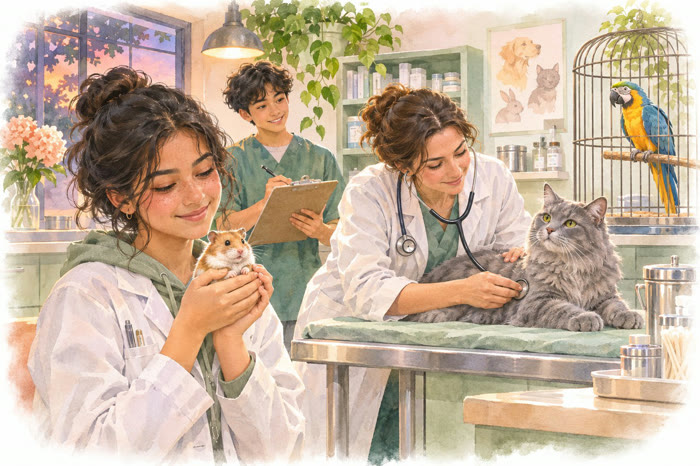

Listen to the text
Speed:

I have wanted to be a vet since I was six, so when the clinic near our house offered a "job shadow day" for school students, I was the first to register. I imagined a day of stroking kittens. I was wrong about almost everything. At eight o'clock the head vet, Dr Liudmyla, met me at the door. She didn't say "welcome". She told me to wash my hands up to the elbows and to put on a green coat. Then she asked me to tie my hair back. "Animals pull," she explained. The first patient was a huge grey cat called Baron, who hated everybody. Dr Liudmyla told me to hold him gently but firmly. She asked me not to look into his eyes, because cats take it as a threat. I looked. Baron scratched me from the wrist to the elbow. "Now you will remember," said the doctor calmly and told the nurse to bring some plasters. Then came a dog with a broken leg, a parrot that had stopped talking and a hamster in a shoe box. The doctor asked me to weigh the hamster. She told me not to drop it. I didn't, but it ran up my sleeve, and for two minutes the whole clinic was looking for a hamster inside my coat. At noon the phone rang. A farmer asked the doctor to come at once, because his cow couldn't give birth. Dr Liudmyla told me to take the heavy bag and to get into the car. On the farm she ordered me to hold the torch and not to faint. The calf was born at two o'clock. It was wet, shaky and the most beautiful thing I had ever seen. On the way back I was silent. My arm hurt, my coat was dirty, and I hadn't stroked a single kitten. "Well?" asked Dr Liudmyla. "Do you still want this job?" "Yes," I said. "But now I know that it is not about loving animals. It is about being useful to them." She smiled for the first time that day. Then she told me to come again on Saturday and asked me not to be late. At home Mum asked me to tell her everything. I told her to sit down. It was going to be a long story.
Tap any sentence to hear it again.
Сподобалось? На сайті ще більше матеріалів для вчителів!
Reader, презентації, ігри, діагностичні та контрольні роботи до підручників 1-11 класів.
Перейти на сайт materials.allaenglish.com